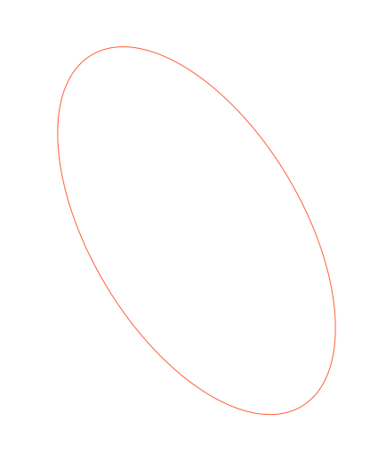
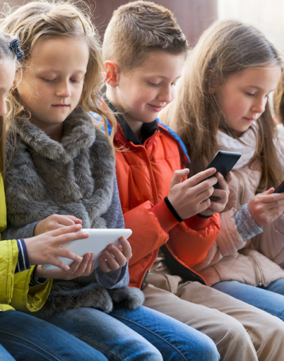
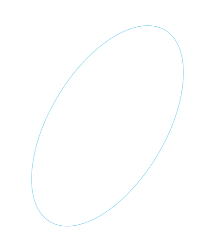

Про програму
Програма амбасадорів парламенту нагадує захопливий квест для школярів, учнів та студентів. Занурюйся у світ можливостей, які відкриються перед учасниками програми амбасадорів Верховної Ради.
Долучайся-



Вчителі
- Стануть справжніми експертами в темі про український парламент
- Відвідають профільні тренінги
- Отримають доступ до навчальних матеріалів, адаптованих до вікових груп учнів
- Взаємодіятимуть із Верховною Радою України
-


Школярі
- Гратимуть у настільні ігри та змагатимуться в пізнавальних вікторинах
- Креативитимуть у соцмережах над власними проєктами
- Створять модель парламенту в школі
- Отримають змогу зустрітися з народними депутатами
 -
 layer data-speed="-5"
Студенти
- Матимуть можливість зустрітися з народними депутатами
- Креативитимуть над власними проєктами
- Влаштують моделювання парламенту та дебати
- Отримають доступ до цікавих освітніх матеріалів

Найактивніші учасники по закінченню програми отримають відзнаки та нагороди. Стати учасником програми амбасадорів можна у кілька кліків. Приєднуйся!
Долучитися